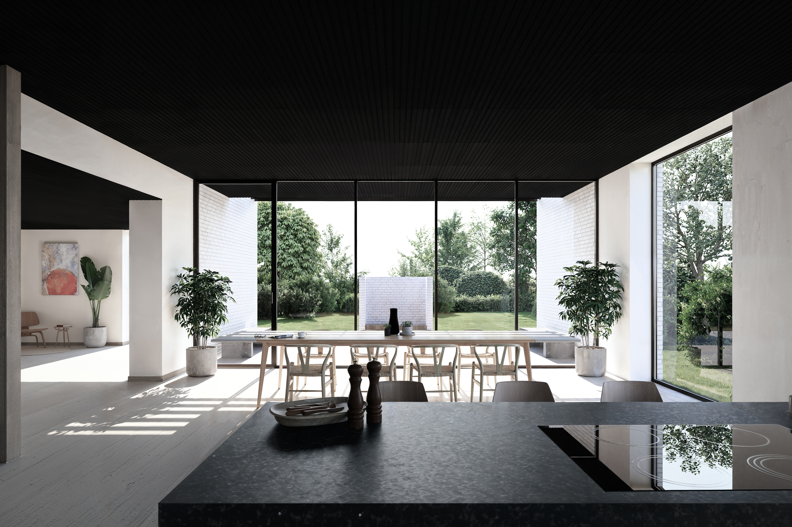
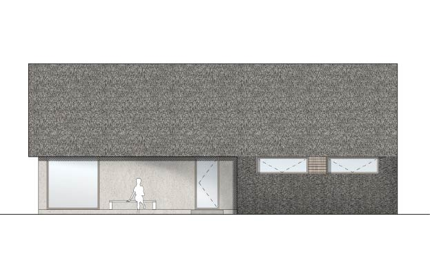

Cand.arch. MAA, Byplanlægger
Oliver Juul Jensen
Mail:
oliverjuuljensen@yahoo.dk
Tlf:
28 49 94 59
Reseda-og lupinvej
Byrum skabt gennem inddragelse, fundraising & biodiversitet
Thomasminde
Byrum skabt gennem inddragelse, fundraising & biodiversitet
KBH SOUTH
Byrum skabt gennem inddragelse, fundraising & biodiversitet
WARM SPACES
Byrum skabt gennem inddragelse, fundraising & biodiversitet
Exners plads
Byrum skabt gennem inddragelse, fundraising & biodiversitet
Kaffe grums
Byrum skabt gennem inddragelse, fundraising & biodiversitet
Montserrat Vayreda School
Byrum skabt gennem inddragelse, fundraising & biodiversitet
Møbel
Byrum skabt gennem inddragelse, fundraising & biodiversitet
Reuse the church
Byrum skabt gennem inddragelse, fundraising & biodiversitet
Skole
Byrum skabt gennem inddragelse, fundraising & biodiversitet
Årslev
Byrum skabt gennem inddragelse, fundraising & biodiversitet
Lyngby
Byrum skabt gennem inddragelse, fundraising & biodiversitet

Parcel
Byrum skabt gennem inddragelse, fundraising & biodiversitet

Sommerhus
Stråtækt....